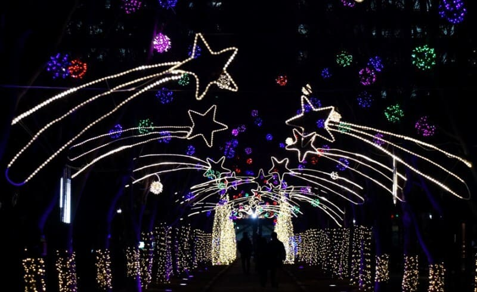
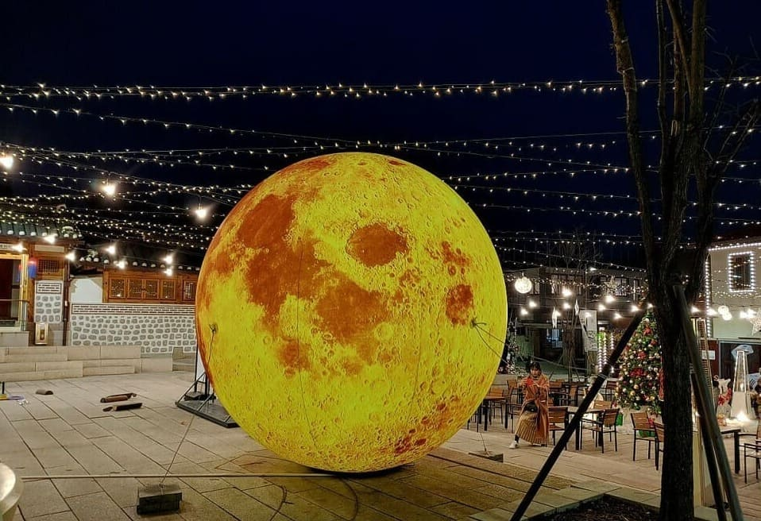
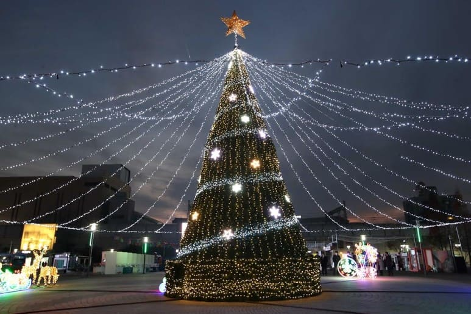
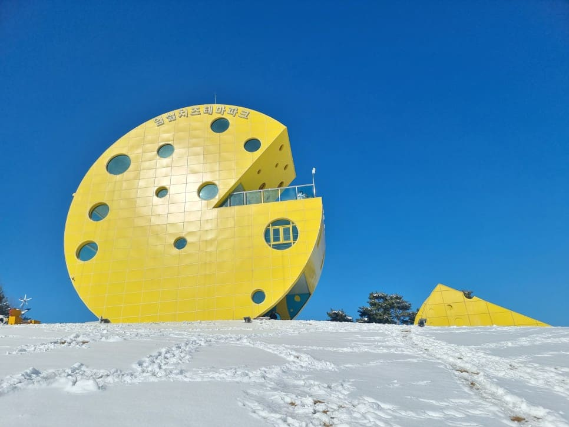
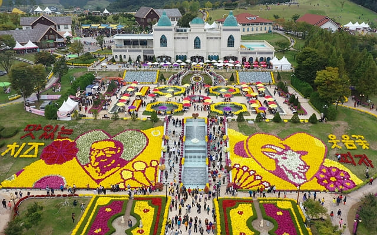

-
Santa Tell Me - Ariana Grande
-
My Only Wish - Britney Spears
-
세 가지 소원 (Wish Tree) - Red Velvet
-
Snow Man - Sia
-
Last Christmas - Ariana Grande
-
This Christmas - TaeYeon
-
Christmas without You - AvaMax
-
All I Want For Christmas Is You - Mariah Carey
-
- 주소 : 경기도 파주시 적성면 설마천로 273-9
- 전화번호 : 031-940-4617
- 볼거리 : 아트 라이팅 쇼
-
『 "신비의 숲"은 감악산의 출렁다리와 연계하여 스토리텔링이 담겨 있는 야간 등산로이다.
힐링파크에서 시작하는 "신비의 숲"에는 "전설의 빛"을 주제로 하고 있다. "신비의 숲" 외에도 "달빛 풍류", "금빛 출렁다리", "힐링의 숲", "전설의 비룡폭포" 등 모두 다섯 가지 빛이 펼쳐지는데, 각각 독특한 이야기를 담고 있다.
어두운 밤을 잔잔하게 밝혀 주는 불빛을 따라 산책로를 거닐면 다양한 숲속 동물 조형물에서 은은한 빛이 비치고 스피커를 통해 새들의 지저귐이 들린다. 』
-
평창 대관령양떼목장
- 주소 : 강원도 평창군 대관령면 대관령마루길 483-32
- 전화번호 : 033-335-1966
- 홈페이지 : http://www.yangtte.co.kr/
- 체험관광 : 양 먹이주기
- 볼거리 : 습지산책로, 움막, 올챙이 연못, 목장 정상, 그네, 매점 내부 장작난로
-
『 대관령양떼목장은 농림부에서 지정한 동물복지와 산림보존에 특화된 산지생태축산 목장으로 1년 중 5개월이 겨울이다.
양 먹이주기를 통한 양들과의 교감과 웅장한 대관령의 모습이 한 손에 잡힐듯하게 보여지는 특별한 경관이 있다. 』
-
청양 칠갑산 얼음분수축제
- 주소 : 충청남도 청양군 정산면 천장호길 223-35
- 전화번호 : 041-942-0797
- 홈페이지 : http://www.alpsvill.com
- 체험관광 : 소가 끄는 썰매, 얼음썰매, 튜브 눈썰매, 얼음볼슬레이, 빙어낚시, 이양기썰매, 맨손빙어 잡기, 짚트랙, 승마, 눈꽃마차
- 볼거리 : 얼음분수, 눈조각, 얼음조각, 천장호 출렁다리
- 먹거리 : 사골떡국, 사골우거지국밥, 해물파전, 빙어튀김, 군고구마, 군밤 군옥수수, 가래떡 구워먹기
-
『 2014년 겨울왕국의 "let it go" 에 빠진 경험이 있다면, 영화 속 한 장면을 이곳에서 찾을 수 있다. 엘사가 선물한 눈의 세상이 바로 여기, 하늘에 가깝다는 천장리, "알프스 마을"에 있다.
짜릿한 썰매장과 매년 달라지는 얼음조각, 눈조각 등 많은 볼거리와 다양한 체험까지 할 수 있으며 5분 거리에는 1박2일 촬영지로 유명한 천장호 출렁다리가 있다. 』
-
청주 수암골
- 주소 : 충청북도 청주시 상당구 수동 81-12
- 전화번호 : 043-200-2232
- 볼거리 : 드라마길, 벽화마을, 전망대
- 먹거리 : 팔봉제빵점, 카페거리
-
『 청주 여행의 시작점이라고도 불리는 수암골은 1950년대 한국전쟁이 끝나고 피란민들이 청주로 이주하면서 생겨난 달동네이다.
현대에 들어서는 많은 집들이 방문객들에 따라 많이 변화하였지만, 아직까지도 회색빛 지붕아래 집들이 골목길을 따라 구불구불한 형태로 1960 ~ 70년대의 거주지 형태를 볼 수 있다.
마을 담벼락에 예쁜 벽화가 그려지고 각종 드라마촬영도 진행하며 청주의 명소로 떠오르고 있다. 』
-
대전 보라매 크리스마스트리 축제

- 

- 주소 : 대전광역시 서구 탄방동 589
- 전화번호 : 042-288-2710
- 볼거리 : 문화공연, 크리스마스 트리 조형물
- 먹거리 : 푸드트럭
-
『 대전 서구청 앞에서 대전시청을 지나 탄방역으로 연결되는 대전 도심의 대표 공원으로 이곳은 서구 힐링 아트페스티벌과 보라매 크리스마스트리 축제가 개최되는 중심지다.
대전 걷고싶은 길 12선에도 선정되어 시청 앞 가로수길로 불린다.
과거 공군 관련 시설이 위치했던 곳으로, 1990년대 둔산 개발로 공군시설은 타 지역으로 옮겨 가고, 공원 한쪽에 모형 전투기가 남아있다. 』
-
- 

- 주소 : 서울특별시 종로구 송월길 14-3
- 전화번호 : 02-739-6994
- 홈페이지 : https://dmvillage.info/
- 체험관광 : 트리 장식, 종합과자 선물세트 뽑기
- 볼거리 : 특별 공연, 성탄조명 포토스팟
-
『 돈의문 박물관 마을은 서울 100년의 이야기를 전시, 공연, 교육, 모임을 통해 몸소 체험할 수 있는 역사문화공간으로 어른들에게는 옛 추억의 향수를, MZ세대에게는 옛 시절의 신기루를 살펴볼 수 있는 대표적인 서울시의 관광자원이다.
레트로를 그대로 옮겨놓은 크리스마스를 느낄 수 있으며 크리스마스 대형 트리와 달 조명등이 만나 빛나는 포토존을 감상할 수 있다. 』
-
- 

- 주소 : 인천광역시 동구 송현동 70-10
- 전화번호 : 032-770-6597
- 체험관광 : 스케이트, 눈썰매
- 볼거리 : 피겨 갈라쇼, 낭만시장
-
『 광장 주변으로 다양한 조각품들이 전시되어 있으며, 겨울이면 대형 크리스마스 트리를 장식하여 시민들에게 멋진 야경을 선사한다.
지난 2015년 첫 선을 보인 "화도진 스케이트장"은 지역 상권을 되살리는 촉매제 역할을 했다는 평가를 받았으며 뉴트로 감성으로 꾸며진 낭만시장 또한 볼거리이다. 』
-
봉화 분천 산타마을
- 주소 : 경상북도 봉화군 소천면 분천길 49 분천역 (분천2리) 일원
- 전화번호 : 054-679-6351
- 체험관광 : 산타열차(O,V-Train), 산타눈썰매장, 풍차놀이터, 산타레일바이크, 당나귀꽃마차, 산타우체국, 산타슬라이드, 이글루 소원지, 삼굿구이
- 볼거리 : 분천역사 내·외부 승강장, 산타시네마, 산타조형물, 크리스마스 트리 및 장식, 크리스마스 거리
- 먹거리 : 산타빌리지 푸드코트, 농특산물 판매장, 산타카페
-
『 핀란드 "로바니에미"에 있는 산타마을에서 아이디어를 얻었으며 겨울(12월 ~2월)과 여름철(7월~8월)에 열린다.
봉화 분천역은 철암과 분천 사이를 오가는 백두대간협곡열차(V-train)가 정차하는 역으로 분천역 안팎에 산타클로스와 크리스마스를 주제로 봉화 산타마을을 꾸몄다.
한국지역진흥재단 국내 겨울 여행지 선호도 2위에 선정되었으며 방문객 33만 명을 유치하고, 32억 원이 넘는 경제적 파급효과를 낸 겨울 대표 관광지이다. 』
-
임실 산타축제

- 
- 
- 주소 : 전라북도 임실군 성수면 도인2길50
- 전화번호 : 063-643-9540
- 홈페이지 : http://www.imsilasfestival.co.kr/?c=1/8
- 체험관광 : 가족 트리만들기, 치즈공예체험, 화덕피자, 군밤구워먹기, 연만들기, 산타썰매장, 치즈컬링체험, 에어바운스 놀이시설
- 볼거리 : 산타퍼레이드대회, 키즈콘서트(마술, 삐에로, 음악공연), 생활문화예술동호회 공연
- 먹거리 : 먹거리장터, 임실N치즈피자, 유제품, 치즈호떡, 버거
-
『 임실치즈를 테마로 한 국내 유일 체험형 관광지로 1960년 지정환 신부가 산양 2마리를 키운 것으로 시작되었다.
스위스의 치즈마을을 본떠서 만든 이국적인 치즈테마파크로 유럽풍의 아름다운 경관을 자랑하는 동화속 그림같은 곳이다.
붉은색 포인세티아로 장식된 치즈캐슬과 대형 크리스마스 트리, 산타의 집, 루돌프 목장 및 갖가지 캐릭터 포토존을 비롯해 크리스마스 분위기를 물씬 풍기는 야간경관 등으로 꾸며졌다. 』
-
통영 디피랑 빛의 정원
- 주소 : 경상남도 통영시 남망공원길 29
- 전화번호 : 1544-3303
- 홈페이지 : http://dpirang.com/
- 체험관광 : 케이블카, 모노레일, 어드벤처
- 볼거리 : 홀로그램, 프로젝션 맵핑, 일루미네이션 조명
-
『 통영 남망산 공원의 산책길 1.5km에 국내 최대 규모의 야간형 테마파크를 조성했다.
통영항이 바라다 보이는 남망산 공원의 주민들이 자주 찾는 길을 밤시간에는 실감 미디어 기술을 통해 완전히 새로운 공간으로 변신시킨다.
귀여운 캐릭터 "피랑이"가 열어주는 문을 따라 오래된 동백나무, 신비폭포, 그림바다, 비밀공방 등 15개의 테마를 차례로 걸어가게 되어 방문자들에게 탄탄한 스토리 라인과 함께 본인이 이야기 속으로 들어가는 듯한 느낌을 불러온다. 』
-
대구 이월드 별빛축제 크리스마스 판타지
- 주소 : 대구광역시 달서구 두류공원로 200
- 전화번호 : 053-620-0001
- 홈페이지 : http://www.eworld.kr
- 볼거리 : 산타 퍼레이드, 83타워, 라이팅 벌룬 로드, 미라클 로즈가든
- 먹거리 : 이월드 내 음식점
-
『 이월드 별빛축제는 30여종의 놀이기구와 대구의 랜드마크인 83타워를 빛과 함께 즐길 수 있는 대구의 대표적인 축제로 매년 방문객이 크게 성장하고 있는 전국 최대 규모의 빛 축제이다.
최근 10년간 인스타그램과 네이버 게시물 3700만여 건을 대상으로 빅데이터 분석을 통해 대구관광뷰로가 발표한 "대구 인생샷 명소 핫 플레이스 Top 100"에서 1위를 차지했다. 』
-
울산대공원 빛축제
- 주소 : 울산광역시 남구 대공원로 94
- 전화번호 : 052-226-0305
- 홈페이지 : https://www.uic.or.kr/ulsanpark/
- 볼거리 : 무대공연, 버스킹 공연, 달빛 노래방, 마술, 저글링 쇼
-
『 지난 2016년부터 시작한 울산대공원 빛 축제는 봄철 장미축제에 이어 겨울철에도 시민들에게 볼거리, 즐길 거리, 체험현장 등을 제공하여 시민들의 겨울축제 부재에 대한 갈증 해소와 축제문화 정착을 위해 노력하고 있다.
이중 타지역 관람객이 40%이상으로 울산지역 뿐만 아니라 겨울철 영남권을 대표하는 축제로 자리매김 하고 있다. 』
-
나주 이슬촌마을 크리스마스 축제
- 주소 : 전라남도 나주시 노안면 이슬촌길 119 (노안면)
- 전화번호 : 063-643-9540
- 홈페이지 : http://www.eslfarm.com
- 체험관광 : 소망엽서 쓰기, 산타양초 만들기, 트리 꾸미기, 볏짚 미끄럼 타기, 루돌프 트렉터 타기
- 볼거리 : 장미정원, 노안성당, 인근주민공연
- 먹거리 : 크리스마스 카페, 이슬촌 향토음식 먹거리 장터
-
『 나주시 노안면에는 지어진지 1세기가 다 되어가는 "노안성당"이 있다.
마을주민의 98%가 이 성당의 천주교 신자로 구성된 이슬촌마을에서 마을잔치의 일환으로 크리스마스 축제를 열기 시작했다.
천주교회를 중심으로 별빛처럼 반짝이는 조명을 밝혀 크리스마스 분위기를 한껏 풍기게 하였으며 폐교된 학교의 실내와 실외 운동장에서는 다양한 체험 프로그램을 진행한다.
농촌진흥청과 한국농촌공사에서 "살고 싶고 가고 싶은 농촌마을", "녹색농촌 체험마을"로 지정되기도 하였다. 』
-
- 주소 : 광주광역시 동구 문화전당로 38
- 전화번호 : 1899-5566
- 홈페이지 : https://www.acc.go.kr/main/index.do
- 볼거리 : 영화더빙쇼, 인디밴드공연, 크리스마스 마켓, 미디어전시
- 먹거리 : 푸드트럭
-
『 국립아시아문화전당은 민주평화교류원, 문화정보원, 문화창조원, 예술극장, 어린이문화원 등 5개의 큰 시설로 이루어져 있으며 아시아 국가들과의 문화교류와 아시아의 문화자원 수집 및 연구를 담당하는 곳이다.
건물의 천장에 위치한 채광정은 낮에는 밝은 빛을 내부로 들여보내 지하건물이나 지상건물 같이 느낄 수 있고, 밤에는 빛을 하늘로 쏘아 올려 아름다운 야경을 연출한다. 』
-
부산 크리스마스트리 문화축제
- 주소 : 부산광역시 중구 광복로 58-2
- 전화번호 : 051-243-3927
- 홈페이지 : https://bctf.co.kr/
- 볼거리 : 크리스마스 트리 조형물, 콘서트, 캐럴송 경연대회, 킹스키즈합창단, 해군군악대, 소망트리, 사랑의 차나누기
-
『 트리축제라는 이름처럼 빛의 향연이 광복동 거리를 화려하게 수놓고, 문화축제라는 이름처럼 매일밤 아름다운 노래와 화려한 공연으로 시민들을 맞이한다.
60만개의 LED전구를 사용하고 산타 마을, 사다리 타는 산타 등 크리스마스와 관련된 20여 가지 주제로 설치된 크리스마스트리를 볼 수 있다. 』
-
제주 바이나흐튼 크리스마스 박물관
- 주소 : 제주특별자치도 서귀포시 안덕면 평화로 654
- 전화번호 : 010-4602-7976
- 홈페이지 : https://hwang8125.wixsite.com/christmasmuseum
- 볼거리 : 크리스마스 마켓
-
『 제주도 바이나흐튼 크리스마스박물관은 전 세계에서도 몇 곳 없으며 우리나라에서 단 하나밖에 없는 크리스마스를 테마로 한 개인 박물관이다.
부부가 여행하며 모은 크리스마스 장식과 관련 물품이 차곡차곡 전시되어 있으며 독일어로 크리스마스를 뜻하는 "바이나흐튼"과 독일의 크리스마스 건축물을 참고해 만들어 유럽의 크리스마스 느낌이 물씬 나는 공간이다.
크리스마스 박물관에서는 전세계에서 공수해온 크리스마스 물건을 직접 구매할 수 있다. 』
-
세종 국립세종수목원
- 주소 : 세종특별자치시 수목원로 136
- 전화번호 : 044-251-0001
- 홈페이지 : https://www.sjna.or.kr/main/
- 볼거리 : 지중해온실, 열대온실, 특별전시온실
-
『 국립세종수목원은 온대 중부권역 자생식물의 보전과 증식을 선도하고, 자연과 문화가 어우러진 국내 최초의 도심형 국립수목원이다.
특별전시온실에서는 "13월의 윈터빌리지"를 주제로 세계 각국의 기후대별 겨울정원과 크리스마스 분위기를 재현한 포토존과 움직이는 미니어처 기차 장식이 있다.
겨울 대표 수종인 포인세티아, 백묘국 등으로 아름답게 꾸며진 정원에서 겨울 여행을 떠나는 기분을 느낄 수 있다. 』


~ 뒤집어져있는 카드를 제한시간 2분 안에 짝을 모두 맞춰주세요 ~
성공😍
실패😥